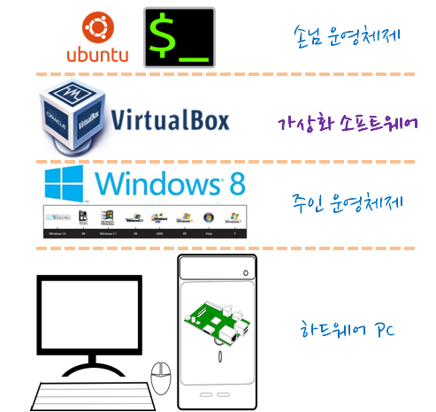
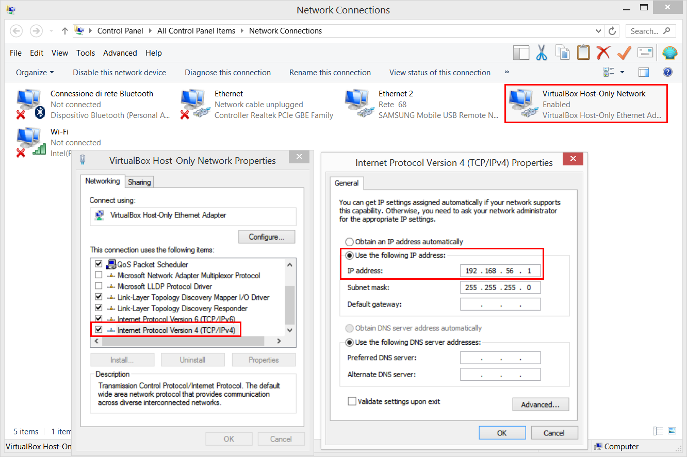
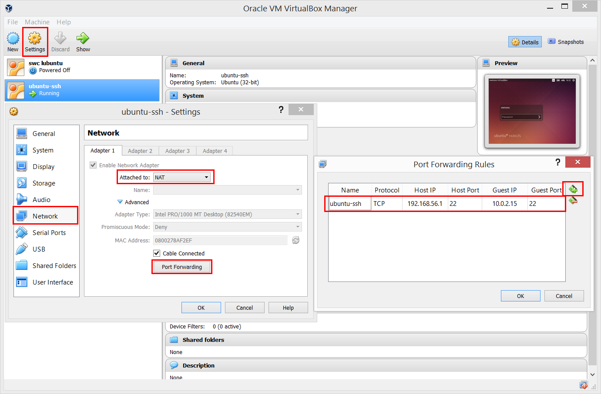

아마존 웹서비스
가상 개발환경 구축
학습 목표
- 가상 개발환경을 구축한다.
- 가상상자와 부랑자를 설치한다.
1. 가상 개발환 경 개발환경 구축

1.1. 가상상자 (버츄얼박스, VirtualBox)
X86 중앙처리장치가 올라간 개인용 하드웨어 컴퓨터에 윈도우 운영체제가 주인 운영체제(Host Operating Syste)가 일반적으로 설치된다. 하지만, 개인용 PC 운영체제로 우분투 리눅스를 설치하려고 하면 과거에는 윈도우를 삭제하고 설치해야 됐다. 하지만, 가상상자 같은 가상화 소프트웨어를 설치하면 윈도우 상태에서 우분투 리눅스를 사용할 수도 있다. 반대로 맥이나 리눅스를 사용한 경우에도 가상화 소프트웨어를 설치하고 윈도를 응용프로그램처럼 사용하는 것도 많이 사용된다.
- 우분투 14.04 설치 이미지를 다운로드한다. Ubuntu Server 14.04.3 LTS 다운로드
- 가상상자를 다운로드 한다. 가상상자 다운로드
- 가상상자에 다운로드 받은 우분투 14.04 버젼을 설치한다.
- 가상상자를 실행하고
새로 만들기(N)를 클릭한다. - 가상상자 명칭을
ubuntu로 정하고 기본설정값을 따라 설정을 완료하면ubuntu전원 꺼짐 상태로 가상상자 하나가 생성된다.
- 가상상자를 실행하고
ubuntu가상상자를 우클릭설정으로 들어가고 대화상자에서어댑터 1브리지 어댑터를 선택하고 저장한다.- 다시
ubuntu가상상자를 우클릭하고시작(T)를 눌러 다운로드 받은 우분투 이미지를 선택한다. - 일반 컴퓨터에 우분투를 설치하는 기분으로 쭉 설치한다.
root사용자 대신 기본 사용자를 정하게 된다. 예를 들어xwmooc등 임의 사용자를 생성하고, 추후ssh로그인에 사용한다.
1.2. 가상상자 접속하기
- 터미널을 실행하고,
sudo apt-get install openssh-server명령어로 ssh 로그인 가능케 소프트웨어를 설치한다. - 가상상자 우분투 터미널을 실행하고
ifconfig명령어로 IP주소를 확인한다. 통상 10.0.2.15 가 된다. - 호스트 운영체제(예, 윈도우가 설치되면 호스트 운영체제는 윈도우)의 IP주소는
시작→네트워크 연결→VirtualBox Host-Only Network을 선택하고 우클릭해서 IP주소를 확인한다. 통상 192.168.56.1이된다.  - 우분투가 설치된 가상상자에 네트워크 환경설정을 한다. 포트포워딩(port forwarding) 기능을 설정해서 호스트 운영체제 명령라인 인터페이스 쉘을 사용해서
ssh로그인한다. - Host IP는
192.168.56.1 - Guest IP는
10.0.2.15 ssh는 기본포트가 22다. 만약 Host IP를2222로 설정하면ssh xwmooc@192.168.56.1 -p 2222와 같이 입력해서 로그인해야 된다.
- Host IP는
ssh xwmooc@192.168.56.1명령어로 우분투가 깔린 가상상자 컴퓨터에 로그인한다.
$ ssh xwmooc@192.168.56.1
The authenticity of host '192.168.0.11 (192.168.0.11)' can't be established.
ECDSA key fingerprint is 2d:57:2b:2c:38:31:a3:0e:c3:bc:30:13:05:98:b4:fd.
Are you sure you want to continue connecting (yes/no)? yes
Warning: Permanently added '192.168.0.11' (ECDSA) to the list of known hosts.
xwmooc@192.168.0.11's password:
Welcome to Ubuntu 14.04.3 LTS (GNU/Linux 3.19.0-25-generic i686)
* Documentation: https://help.ubuntu.com/
58 packages can be updated.
32 updates are security updates.
The programs included with the Ubuntu system are free software; the exact distribution terms for each program are described in the
individual files in /usr/share/doc/*/copyright.
Ubuntu comes with ABSOLUTELY NO WARRANTY, to the extent permitted by applicable law.
xwmooc@xwmooc-VirtualBox:~$참조: 우분투 14.04 서버 세팅하기 (Virtual Box)
참조: VirtualBox Ubuntu 기본 환경에서 ssh 접근하기
1.2. 부랑자(Vagrant) 설치
부랑자(Vagrant)는 가상 개발 환경을 생성하고 환경설정을 가능케하는 소프트웨어로, 초기에는 버츄얼 박스만 지원했으나, 1.1버젼 이후에는 VMWare, KVM, LXC(리눅스 컨테이너), 다양한 형상관리 소프트웨어와 함께 사용할 수 있고, 특히 1.6버젼 이후 도커 컨테이너를 지원한다.
부랑자 다운로드 웹사이트에서 소프트웨어는 다운로드 받으면 된다.
디렉토리를 하나 생성하고 그 디렉토리로 이동해서 원하는 부랑자 박스 명칭을 입력한다. vagrant init ubuntu/trusty64 명령어를 통해서 .vagrant 와 Vagrant 파일이 자동 생성된다. vagrant up 명령어는 Vagrant 설정정보에 맞춰 부랑자 상자를 생성한다. vagrant ssh 명령어로 다운로드받은 가상 우분투 컴퓨터에 접속한다.
$ vagrant init ubuntu/trusty64
$ vagrant up
$ vagrant sshVagrantbox.es 사이트를 활용할 경우 원하는 부랑자 박스를 찾아 vagrant box add 명령어로 추가하고 vagrant init 와 vagrant up 명령어로 설치한다.
$ vagrant box add https://atlas.hashicorp.com/ARTACK/boxes/debian-jessie
==> box: Loading metadata for box 'https://atlas.hashicorp.com/ARTACK/boxes/debian-jessie'
==> box: Adding box 'ARTACK/debian-jessie' (v8.1.0) for provider: virtualbox
box: Downloading: https://atlas.hashicorp.com/ARTACK/boxes/debian-jessie/versions/8.1.0/providers/virtualb
box: Progress: 100% (Rate: 894k/s, Estimated time remaining: --:--:--)
==> box: Successfully added box 'ARTACK/debian-jessie' (v8.1.0) for 'virtualbox'!
$ vagrant init ARTACK/debian-jessie
$ vagrant up
$ vagrant ssh1.2.1. 파이썬 소프트웨어 카펜트리
소프트웨어 카펜트리 부랑자 환경설정 사이트에서 git clone 명령어로 복제한다.
- 가상상자와 부랑자를 설치한다.
- Software Carpentry Vagrant 환경파일을 복제한다.
- 복제한 디렉토리로 변경한다.
vagrant up실행한다.vagrant ssh를 통해 배쉬쉘 접속한다.